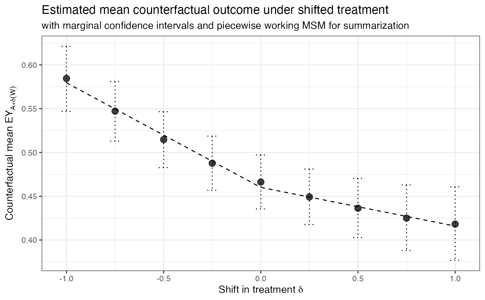

Plot working MSM for causal effects of an intervention grid
Usage
# S3 method for class 'txshift_msm'
plot(x, ...)Arguments
- x
Object of class
txshift_msmas produced by a call tomsm_vimshift.- ...
Additional arguments passed to
plotas necessary.
Details
Creates a visualization of the intervention-specific counterfactual means as well as the working marginal structural model summarizing the trend across posited values of the intervention.
Examples
if (require("sl3")) {
set.seed(3287)
n_obs <- 1000
W <- as.numeric(replicate(1, rbinom(n_obs, 1, 0.5)))
A <- as.numeric(rnorm(n_obs, mean = 2 * W, sd = 1))
Y <- rbinom(n_obs, 1, plogis(2 * A - W))
msm <- msm_vimshift(
W = W, A = A, Y = Y, estimator = "tmle",
g_exp_fit_args = list(
fit_type = "sl",
sl_learners_density = Lrnr_density_hse$new(Lrnr_glm$new())
),
Q_fit_args = list(
fit_type = "glm",
glm_formula = "Y ~ ."
),
delta_grid = seq(-1, 1, 0.25)
)
plot(msm)
# fit a linear spline with knot at 0
set.seed(8293)
n_obs <- 1000
W <- as.numeric(replicate(1, rbinom(n_obs, 1, 0.5)))
A <- as.numeric(rnorm(n_obs, mean = 2 * W, sd = 1))
Y <- rbinom(n_obs, 1, plogis(0.1 * A * (A >= 0) - 3 * A * (A < 0) - W))
msm <- msm_vimshift(
W = W, A = A, Y = Y, estimator = "tmle",
g_exp_fit_args = list(
fit_type = "sl",
sl_learners_density = Lrnr_density_hse$new(Lrnr_glm$new())
),
Q_fit_args = list(
fit_type = "glm",
glm_formula = "Y ~ ."
),
delta_grid = seq(-1, 1, 0.25),
msm_form = list(type = "piecewise", knot = 0)
)
plot(msm)
}
#> Warning: Using `size` aesthetic for lines was deprecated in ggplot2 3.4.0.
#> ℹ Please use `linewidth` instead.
#> ℹ The deprecated feature was likely used in the txshift package.
#> Please report the issue at <https://github.com/nhejazi/txshift/issues>.
#> Warning: `aes_string()` was deprecated in ggplot2 3.0.0.
#> ℹ Please use tidy evaluation idioms with `aes()`.
#> ℹ See also `vignette("ggplot2-in-packages")` for more information.
#> ℹ The deprecated feature was likely used in the txshift package.
#> Please report the issue at <https://github.com/nhejazi/txshift/issues>.
